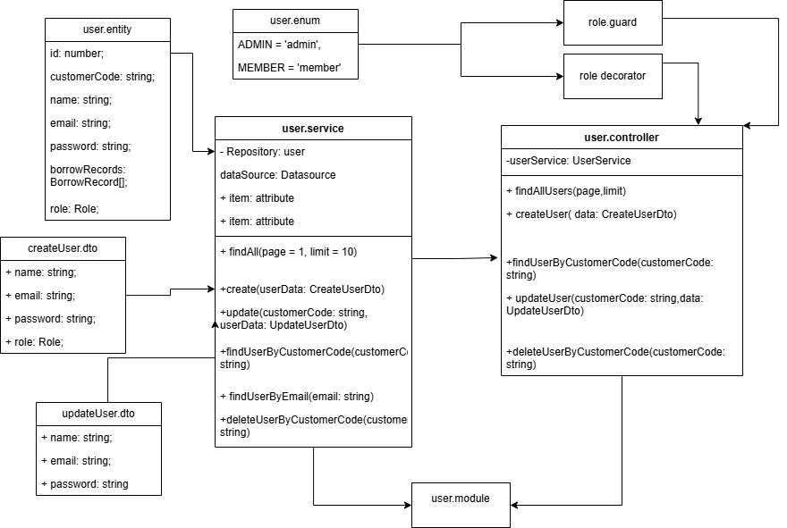
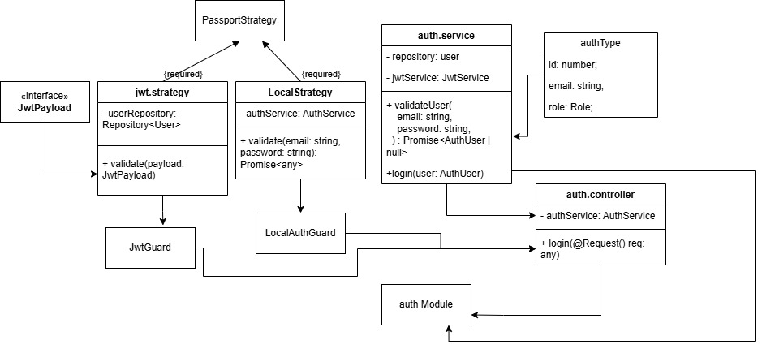
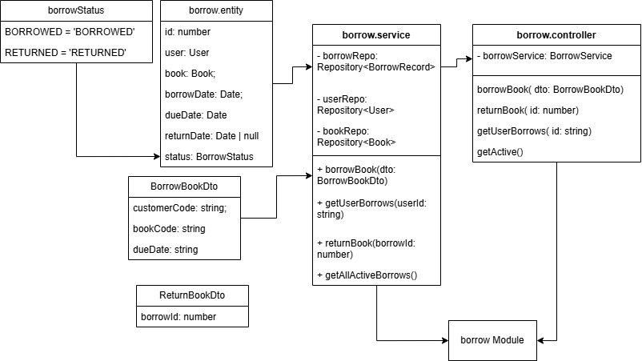
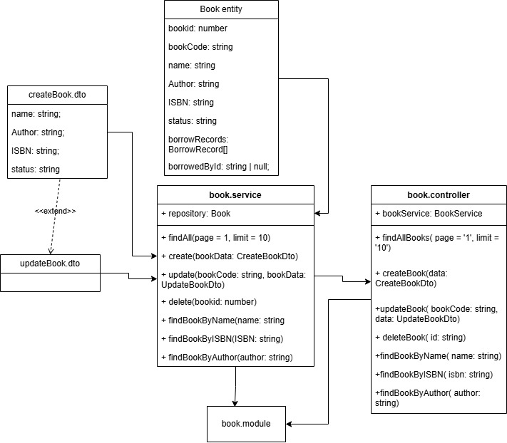

Module summaries, component lists, and explained service functions for the main backend modules.

The User module manages library users. It handles user creation, pagination, profile updates, lookup by customer code or email, password hashing, deletion, role assignment, and user-related metrics.
user.module.ts: registers the user feature module.user.controller.ts: exposes user REST endpoints.user.service.ts: contains user business logic.user.entity.ts: maps the User database entity.createUser.dto.ts: create-user request shape.updateUser.dto.ts: update-user request shape.user.enum.ts: user role enum.role.guard.ts: checks role-based access.role.decorator.ts: declares required roles on routes.findAll(page = 1, limit = 10)Fetches users with pagination. It normalizes page to at least 1, clamps limit between 1 and 100, updates the active-users gauge, and returns a paginated response.
Output: { data: User[], meta: { page, limit, total, totalPages } }.
create(userData: CreateUserDto)Creates a user inside a transaction. It checks duplicate email, hashes the password with bcrypt, generates a customerCode, saves the user, and increments the user-created metric.
Output: The saved User entity. Duplicate email conflicts throw ConflictException.
update(customerCode: string, userData: UpdateUserDto)Updates a user by customerCode. It supports name, email, and password; password updates are validated and hashed before saving.
Output: The updated User entity. Missing users throw NotFoundException.
findUserByCustomerCode(customerCode: string)Finds a user using the public customer code identifier.
Output: A User entity. Throws NotFoundException when no user exists.
findUserByEmail(email: string)Finds a user by email, mainly for authentication workflows.
Output: A User entity. Throws NotFoundException when no user exists.
deleteUserByCustomerCode(customerCode: string)Deletes a user by customer code.
Output: No explicit return value on success. Throws NotFoundException when no row is deleted.

The Auth module validates user credentials, issues JWT access tokens, and provides guards and strategies for protecting backend routes.
auth.module.ts: registers authentication dependencies.auth.controller.ts: exposes login-related endpoints.auth.service.ts: validates users and signs JWTs.authType.ts: defines authenticated-user typing.local.strategy.ts: username/password strategy.local-auth.guard.ts: guard for local login.jwt.strategy.ts: validates JWT payloads.jwt-auth.guard.ts: protects JWT-only routes.authenticated.guard.ts: checks session authentication.session.serializer.ts: serializes session users.validateUser(email: string, password: string)Looks up the user by email and compares the supplied password with the stored bcrypt hash. It records auth request/failure metrics and increments the active-users gauge on success.
Output: { id: number, email: string, role: Role }. Invalid credentials throw UnauthorizedException.
login(user: AuthUser)Builds a JWT payload from the authenticated user's id, email, and role, then signs it using JwtService.
Output: { access_token: string }.

The Borrow module handles book borrowing and returning. It validates users and books, prevents double-borrowing of the same book, tracks due dates and return dates, and exposes active or user-specific borrow history.
borrow.module.ts: registers borrow dependencies.borrow.controller.ts: exposes borrow and return endpoints.borrow.service.ts: contains borrow transaction logic.borrow.entity.ts: maps BorrowRecord and BorrowStatus.borrow-book.dto.ts: borrow request shape.return-book.dto.ts: return request shape.Book relation: connects borrow records to books.User relation: connects borrow records to users.borrowBook(dto: BorrowBookDto)Validates the user by customerCode, validates the book by bookCode, checks whether the book is already actively borrowed, then saves a new borrow record with status BORROWED.
Output: The saved BorrowRecord. Missing users/books throw NotFoundException; unavailable books throw BadRequestException.
returnBook(borrowId: number)Loads the borrow record with related user and book, prevents returning an already returned record, then marks it as RETURNED and sets returnDate.
Output: The updated BorrowRecord.
getUserBorrows(userId: string)Returns borrow records for a specific user by matching user.customerCode. Results include the related book and are ordered newest first.
Output: BorrowRecord[] with the book relation loaded.
getAllActiveBorrows()Fetches all borrow records currently marked as BORROWED, including user and book details.
Output: Active BorrowRecord[] with user and book relations loaded.

The Book module manages the library catalogue. It creates, updates, deletes, paginates, and searches books by name, ISBN, or author while recording operational metrics.
book.module.ts: registers the book feature module.book.controller.ts: exposes catalogue REST endpoints.book.service.ts: contains catalogue business logic.book.entity.ts: maps the Book database entity.createBook.dto.ts: create-book request shape.updateBook.dto.ts: update-book request shape.generateCode: creates human-friendly book codes.BorrowRecord relation: connects books to borrow records.findAll(page = 1, limit = 10)Fetches books with pagination, normalizing invalid page/limit values and returning metadata for client paging.
Output: { data: Book[], meta: { page, limit, total, totalPages } }.
create(bookData: CreateBookDto)Creates a book inside a transaction, checks duplicate ISBN values, generates a bookCode, and saves the entity.
Output: The saved Book entity. Duplicate ISBN values throw ConflictException.
update(bookCode: string, bookData: UpdateBookDto)Builds a partial update from supplied name, Author, and ISBN values, updates by bookCode, then returns the refreshed book.
Output: The updated Book entity, or the existing lookup result when no fields are supplied.
delete(bookid: number)Deletes a book by numeric id and verifies that a row was affected.
Output: { message: string }. Missing books throw NotFoundException.
findBookByName(name: string)Finds the first book whose name exactly matches the supplied value.
Output: A Book entity or null.
findBookByISBN(ISBN: string)Finds the first book whose ISBN exactly matches the supplied value.
Output: A Book entity or null.
findBookByAuthor(author: string)Finds the first book whose Author exactly matches the supplied author value.
Output: A Book entity or null.
The Chatbot module provides an AI library assistant. It manages conversations, routes short catalogue questions to tool calls, uses RAG for contextual answers, stores conversation history in Redis, and records chatbot/system metrics.
chatbot.module.ts: registers chatbot dependencies.chatbot.controller.ts: exposes chat endpoints.chatbot.service.ts: orchestrates chat requests.chatbot-conversation.store.ts: stores chat history in Redis.chat-session.factory.ts: creates Gemini chat sessions.prompt-builder.ts: builds initial, history, and RAG prompts.routing-policy.ts: decides tool call vs RAG routing.tool-executor.ts: executes supported book lookup tools.rag.service.ts: embeds, indexes, and searches RAG content.timeout.service.ts: wraps model calls with timeouts.toolCall.ts: declares Gemini tool definitions.helperType.ts: defines chat and tool types.chatVariables.ts: stores prompt and timeout constants.dto/chat-request.dto.ts: chat request DTO.ChatbotService.handleMessage(message, conversationId?)Main chatbot entry point. It resolves the conversation id, loads history, creates a chat session, sends the initial prompt, generates a reply, appends the turn to storage, and records timing, CPU, and memory metrics.
Output: { reply: string, conversationId: string }.
ChatbotService.generateWithRAG(chat, message)Searches the RAG index, builds a context-enriched prompt, sends it to the model with timeout protection, and returns the generated text.
Output: A model-generated reply string.
ChatbotService.generateWithTools(chat, message)Lets the model request supported book lookup tools, executes each tool, sends function responses back to the model, and repeats until a final text answer is produced or the iteration limit is reached.
Output: A final reply string, or No final response generated..
ChatbotService.generateReply(chat, message)Chooses between tool calling and RAG. Short catalogue-search messages use tools; longer or general messages use RAG.
Output: A reply string.
ChatbotService.createChatSession(history)Converts stored conversation history into model history format and creates a Gemini chat session.
Output: A ChatSession.
ChatbotService.sendInitialPrompt(chat, message)Sends the initial library-assistant prompt to the model with the configured timeout.
Output: No explicit return value.
ChatbotService.extractToolCall(response)Reads the first Gemini candidate and returns the first function call part if the model requested a tool.
Output: A ToolCall object or null.
ChatbotService.resolveTimeoutMs()Reads CHATBOT_TIMEOUT_MS from the environment and falls back to DEFAULT_TIMEOUT_MS when the value is missing or invalid.
Output: Timeout duration in milliseconds.
ChatbotService.recordSystemMetrics(startCpuUsage, startTime)Calculates request CPU usage and heap memory, then updates Prometheus gauges.
Output: No explicit return value.
RagService.embed(text)Creates an embedding vector for text using the Gemini embedding model.
Output: number[].
RagService.chunkText(text, size = 500)Splits text into fixed-size character chunks for indexing.
Output: string[].
RagService.indexBook(bookId, content)Deletes old Redis RAG keys for the book, chunks the content, embeds each chunk, and stores the chunk/vector pairs in Redis.
Output: No explicit return value; Redis index entries are created.
RagService.cosine(a, b)Computes cosine similarity between two vectors and returns 0 if either vector has zero magnitude.
Output: Similarity score as a number.
RagService.search(query)Embeds the query, loads indexed Redis chunks, scores them by cosine similarity, sorts descending, and returns the top three.
Output: Array<{ text: string, score: number }>.
TimeoutService.withTimeout(operation, timeoutMs, operationName)Races an async operation against a timer and throws RequestTimeoutException if the timer wins.
Output: The operation result typed as T.
The app factory centralizes NestJS application creation and shared bootstrap configuration. It supports both the production AppModule path and integration-test TestingModule path, optionally connects Redis, wires Redis-backed sessions, and applies the common security, validation, authentication, exception filter, and Swagger setup.
app.factory.ts: creates and configures the Nest Express application.main.ts: starts the real server by calling createApp() and listening on port 3000.test/integration/helpers/test-app.ts: builds test modules and reuses createApp() for integration tests.app.module.ts: default root module used when no testing module is supplied.config/redis.ts: loads Redis environment settings, creates the Redis client, and exposes connect/disconnect/reset helpers.appSetup/setupSecurity.ts: applies Helmet, CORS, and disables the Express powered-by header.appSetup/setupValidation.ts: registers the global DTO validation pipe.appSetup/setupAuth.ts: configures Express sessions and Passport middleware.appSetup/setupFilters.ts: registers the global exception filter.appSetup/setupSwagger.ts: exposes Swagger API documentation outside production.createApp(input = AppModule, options = {})Creates a NestExpressApplication from either the default AppModule or a supplied TestingModule. Real app creation uses NestFactory.create; test app creation uses TestingModule.createNestApplication.
Output: A configured NestExpressApplication returned from configureApp.
configureApp(app, options = {})Applies the shared runtime configuration. It connects Redis by default, creates a RedisStore for sessions when Redis is enabled, then runs security, validation, auth/session, global filter, and Swagger setup in order.
Output: The same configured application instance. Passing { connectToRedis: false } skips Redis and creates an in-memory session setup.
isTestingModule(value)Checks whether the supplied input has createNestApplication, allowing the factory to distinguish integration-test modules from normal Nest module classes.
Output: A boolean type guard for TestingModule.
connectRedis()Opens the shared Redis client only when it is not already connected. Redis host and port are read from environment files and environment variables, with defaults of 127.0.0.1 and 6379.
Output: The connected Redis client. Invalid REDIS_PORT values throw during Redis module initialization.
setupSecurity(app)Installs Helmet with a restrictive content security policy and HSTS, enables credentialed CORS for http://localhost:5173, and removes the x-powered-by header.
Output: No explicit return value; middleware and Express settings are applied to the app.
setupValidation(app)Registers a global ValidationPipe that whitelists DTO fields, rejects non-whitelisted fields, and transforms incoming payloads into expected DTO types.
Output: No explicit return value; global validation is applied.
setupAuth(app, store)Configures express-session with the supplied store, SESSION_SECRET, secure production cookies, and Passport initialization/session middleware.
Output: No explicit return value; session and Passport middleware are mounted.
setupFilters(app)Registers GlobalExceptionFilter so application exceptions are handled through one shared response path.
Output: No explicit return value; the global filter is applied.
setupSwagger(app)Builds Swagger documentation for the library API, including bearer JWT auth metadata, and serves it at /api when NODE_ENV is not production.
Output: No explicit return value; Swagger is mounted in non-production environments.